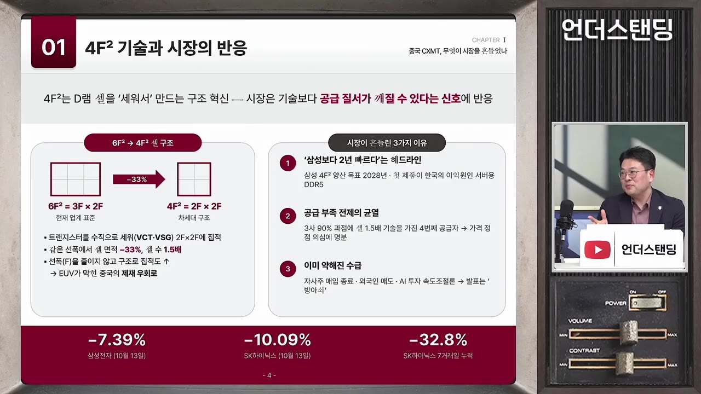
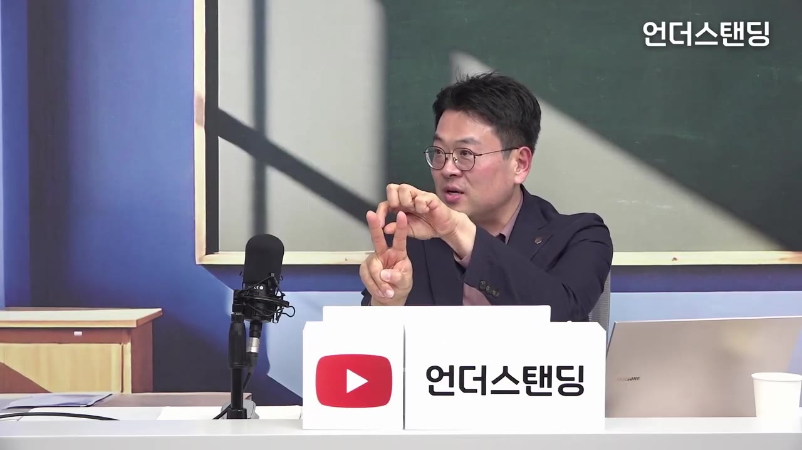
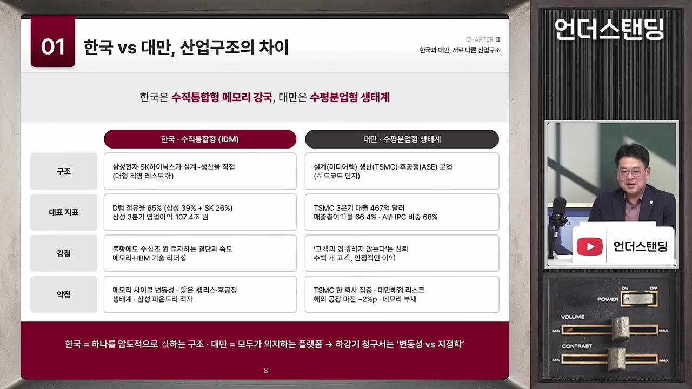
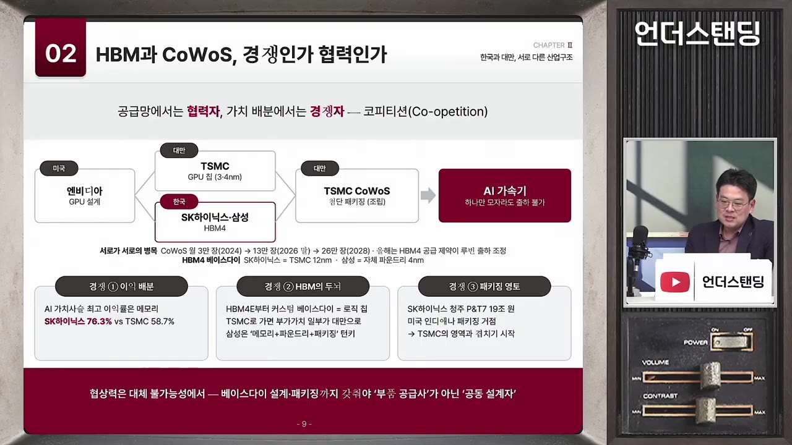
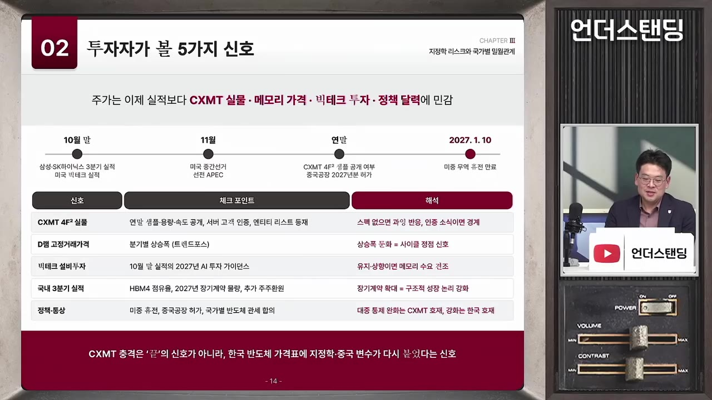

"한국 반도체만 100조씩 번다? 미국이 가만두지 않을 겁니다" 삼성전자·SK하이닉스가 이익 줄어들 걸 알면서도 공장 짓는 진짜 이유 (고려대 전기전자공학부 신창환 교수)
▶ 원본 영상 보기한눈에 보기
- 중국 CXMT의 4F² 서버 D램은 기술에서 앞선 것이 아닙니다. EUV 장비를 못 써서 F(최소 선폭)를 줄일 수 없자 셀 구조를 바꿔 우회한 것이고, 진짜 위협은 10년 만에 여기까지 따라온 속도와 물량입니다.
- 메모리 가격은 결국 수요와 공급이 정합니다. 공급은 늘리는 데 오래 걸리고 수요는 하루 만에도 사라질 수 있어서, 공급이 부족한 정도가 생각보다 얕으면 가격이 한꺼번에 무너질 수 있다는 것이 신창환 교수의 시각입니다.
- 한국 반도체 이익이 100조 원을 넘을 만큼 커지자 미국이 가격 상한제 같은 압박을 할 위험이 생겼습니다. 삼성·SK가 이익이 줄 줄 알면서도 공장을 더 짓는 이유가 이것일 수 있습니다.
- 장기 생존 전략은 범용 메모리를 넘어 맞춤형 메모리(커스텀 HBM)로 옮겨 가는 것입니다. 단순 부품 공급사에서 엔비디아·TSMC와 함께 설계하는 회사로 바뀌어야 한다는 것입니다.
- 교수의 결론은 "메모리 돈벼락은 계속되지만 돈벼락을 맞는 주인공은 바뀔 수 있다"입니다. 투자자가 지켜볼 신호로 CXMT 실물, D램 고정거래가격, 빅테크 설비투자(CapEx), 기업 IR, 지정학 다섯 가지를 들었습니다.
이런 분께 도움이 됩니다
- 삼성전자·SK하이닉스 주식을 갖고 있거나 사려는데, 고점이라는 주장(피크아웃론)과 더 간다는 주장 사이에서 헷갈리는 분
- 4F², VCT, 피치 같은 D램 기술 용어와 중국 반도체 뉴스의 실제 의미를 알고 싶은 분
핵심 내용
결론: 돈벼락은 계속되지만 주인공은 바뀔 수 있다
- AI 시스템은 메모리 없이 돌아가지 않으므로 5~10년 뒤 메모리 시장은 지금보다 훨씬 커져 있을 것이라고 봅니다. (38:30)
- 다만 지금까지 세 회사가 나누던 몫을 CXMT까지 네 회사가 나누게 됩니다.
- 그래도 네 회사 모두 지정학 때문에 죽지는 않을 것이라고 봅니다. 미국은 마이크론을, 중국은 CXMT를 죽일 수 없고, 한국을 죽이면 양쪽 다 곤란해지기 때문입니다.
- CXMT 4F² 뉴스는 "한국은 끝났다"는 신호가 아닙니다. 한국 메모리 가격표에 지정학 리스크와 '차이나'라는 변수가 하나 더 붙었다는 뜻입니다. (44:56)
💡 메모리 산업이 망하는 게 아니라, 누가 얼마나 가져가느냐가 다시 정해지는 국면이다.
호황이 후발 주자를 키운다
- 지금 메모리 이익 규모는 2017~18년 호황 때보다 10배 이상 큽니다. (2:46)
- 메모리 가격이 오르면 후발 기업도 적자에서 흑자로 돌아서고, 연구개발과 증설에 쓸 돈이 생깁니다.
- 1~2년은 메모리 3사가 압도적으로 유리합니다(주가, 배당, 설비투자, 인재).
- 3~5년을 보면, 원래라면 사라졌어야 할 기업이 살아남아 패권에 도전할 기회를 얻습니다. 그 결과물이 중국 반도체 굴기입니다.
- 예전 치킨게임은 이제 작동하지 않습니다. 예전에는 1등 기업이 번 돈으로 증설해 가격을 낮추고 후발 주자를 죽였습니다. (50:41)
- 지금은 1등 기업군의 수가 줄었고, 직전 다운턴(2019년 약한 흑자, 2023년 10조 원 가까운 적자)을 겪은 뒤라 증설을 망설였습니다.
4F² D램이란 무엇인가
- D램 1비트는 트랜지스터 1개(수도꼭지)와 커패시터 1개(전자를 담는 물양동이)로 이루어집니다.
- 커패시터: 전자가 갇혀 있으면 1, 없으면 0입니다. 지금은 위로 길게 솟은 원기둥 모양이고, 10나노급 4세대 제품의 가로세로 비(종횡비)는 약 50입니다.
- 트랜지스터: 소스(전자 공급원, 메모리 용어로 비트라인) → 채널 → 드레인(커패시터와 연결된 스토리지 노드) 순으로 전자가 흐르고, 게이트(메모리 용어로 워드라인)가 켜고 끕니다.
- 4F²의 혁신은 커패시터가 아니라 트랜지스터를 수직으로 세운 것입니다. 게이트가 세워진 채널을 둘러쌉니다. (7:25)
- 부르는 이름: CXMT는 VSG(Vertical Surrounding Gate), 삼성·SK하이닉스는 VCT(Vertical Channel Transistor)·VGT라고 부릅니다.
- 8F²
- 6F²
- 4F²
- 18F²
초기 D램 셀 구조입니다.
- 26F²
현재 주력 구조입니다. 대략 가로 3F × 세로 2F 면적에 트랜지스터 1개와 커패시터 1개를 넣고, 커패시터만 위로 높게 세웠습니다.
- 34F²
가로·세로 모두 2F입니다. 트랜지스터까지 수직(3D)으로 세워야 들어갑니다. 이론상 마지막 단계입니다. (10:31)

F(피처 사이즈)와 피치: 4F²가 무조건 앞선 것은 아니다
- F는 회사마다 다른 숫자이고 노광(빛으로 회로를 새기는) 공정 기술과 연결됩니다.
- 손가락 하나의 폭이 F이고, 손가락 사이를 F만큼 띄우면 선 하나와 빈 공간 하나를 합친 1피치가 2F입니다.

- 노광 공정이 만들 수 있는 최소 간격이 2F입니다. 가로·세로 모두 2F이므로 4F²가 이론적 한계이고, 3F²·2F²는 만들 수 없습니다. (9:22)
- 면적 = F값 × 계수이므로 F값까지 같이 봐야 합니다.
- 예시: CXMT의 F가 14nm이고 삼성·SK가 11nm라면, 삼성·SK의 6F²가 밀도가 더 높아 더 좋은 기술입니다.
- 언론 보도로는 CXMT가 11.9nm까지 했다고 합니다. 연내 출시되는 칩을 뜯어 분석해 봐야 실제 수준을 알 수 있습니다. (11:42)
중국은 왜 먼저 4F²로 갔나: EUV가 없어서
- 고객사는 밝혀지지 않았지만 교수는 화웨이로 추정합니다. 고용량·고사양 서버 D램이 필요한데 EUV 장비 없이는 F를 줄일 수 없으니, 계수 6을 4로 바꿔서라도 요구 성능을 맞추려 한 것입니다. (12:53, 14:02)
- 삼성·SK도 기술은 이미 있습니다.
- 삼성은 올해 2월 반도체 학회 ISSCC(자막상 'ISC')에서, SK하이닉스는 작년 일본 VLSI 학회에서 발표했습니다.
- 지금은 6F²에 EUV로 F를 줄여 높은 마진을 누리고 있어서, 4F²로 서두를 이유가 없습니다.
- 앞으로는 아이디어가 아니라 양산·원가·마진의 싸움입니다.
- 정말 놀라운 것은 속도입니다. 10년 전에는 D램을 만들지도 못하던 회사가 고사양 서버용까지 시도합니다. 서버 고객 인증에는 보통 6개월~1년이 걸립니다. (14:51)
중국의 진짜 위협: 공급 질서와 물량
- 기술 격차는 아직 2년 정도로 봅니다. 위협은 공급 질서가 바뀌는 것이고, 저가 시장부터 내줄 수 있습니다. (18:42)
- 고객은 PC·노트북·스마트폰용으로는 중국산도 쓸 만하다며 가격 인하를 요구합니다.
- 공급사 마케팅은 "지금 90원에 팔 것을 나중에 70원에 파느니 지금 90원에 팔아 고객을 잡자"는 판단을 하게 되고, 가격이 식습니다.
- 장비 공급도 눈여겨볼 포인트입니다. 핵심 장비는 수출 통제로 막혀 있지만, 공시 자료를 보면 세계 장비사 Top 10 중 2곳이 이미 중국 회사입니다.
- 원익IPS·유진테크·주성 같은 국내 장비사도 중국에 많이 공급하고 있을 것이라고 봅니다.
- 삼성 매출의 약 15%, SK하이닉스 매출의 약 25%가 중국입니다. 중국 하이퍼스케일러(바이두·알리바바·텐센트)가 자국산 CXMT·YMTC 메모리를 채택하면 그중 절반 정도를 잃는 시나리오입니다. (56:09)
- 줄 서는 인기 카레집 옆에 같은 집이 생겨도 1등 집은 계속 줄이 선다는 진행자 비유에 동의하면서, 그래서 "전부가 아니라 절반"이라고 봅니다.
최근 주가 하락의 다른 이유들 (출연자 해석)
- CXMT 뉴스 당일 CXMT 주가도 같이 빠졌으므로 그 뉴스만의 문제는 아니라고 봅니다.
- 두 회사의 자사주 매입이 마무리됐고, 2025년 10월부터 크게 오른 데 따른 외국인 차익실현도 있습니다.
- 샘 올트먼의 'AI 투자 속도 조절' 발언에 대해 교수는 개인적인 추측을 내놓았습니다. 내부에 훨씬 좋은 모델이 있어서 공개하지 않고 새 사업(예: 신약)을 준비하려는 것일 수 있다는 것입니다. (19:52)
- 진행자는 "이 정도면 충분한 모델이 나왔다"는 정점 신호라면 D램에는 오히려 더 큰 악재라고 지적했습니다.
수요와 공급: 피크아웃 논쟁의 핵심
- 공급은 느리고 수요는 빠릅니다. 증산을 결정해도 반도체 제조에 약 석 달이 걸립니다. 반면 수요는 구매팀이 주문서(PO)를 자르면 내일이라도 사라집니다. (1:08:08)
- 위약금이 100원이어도 가격이 200원 떨어질 것 같으면, 위약금을 물고 나중에 싸게 사는 게 이득입니다.
- 2022년 1·2분기에는 모두가 슈퍼사이클을 외쳤지만, 2022년 7월부터 고객사들의 PO 취소가 들불처럼 번졌습니다.
- 생필품일수록 작은 격차로도 급등하고 작은 공급 증가로도 급락할 수 있습니다(진행자 비유). 80억 명에게 산소 캔이 필요한데 79억 개만 있으면 값이 폭등하지만, 1억 개만 더 만들면 원래 값으로 돌아옵니다.
- 수요가 10이고 공급이 2~3이라도, 공급이 10에 다가간다는 신호만 보이면 그 전에 가격이 무너질 수 있다는 것이 교수의 설명입니다. (58:08)
- 고객은 기다리면 공급이 나온다는 걸 알기 때문에 미래 물량까지 미리 쌓아 두지 않고 재고를 짧게 가져갑니다.
- 결국 봐야 할 것은 고객의 고객, 즉 전방 수요입니다. 예를 들어 레노버가 노트북을 얼마나 파느냐가 메모리 구매량을 정합니다.
- 교수는 지금 거시 경제 상황으로 볼 때 전방 수요가 폭발적이라고 보기는 어렵다는 입장입니다. 이 경우 고객이 관망하고, 메모리사는 가격을 100에서 80으로 낮춰서라도 물량을 밀어내게 됩니다.
| D램 재고일수 | 의미 |
|---|---|
| 4~7일 (2017~18년) | 공장에 불이 날 정도로 공급이 부족한 상태 |
| 40~60일 | 일반적인 관리 범위 |
| 100일 초과 | 공급이 쌓이기 시작했다는 신호 |
- 진행자의 반론: 수조 원을 걸고 증설하는 메모리 회사와 장기계약(LTA)을 맺는 고객사가 수요와 공급을 가장 잘 알 텐데, 피크아웃론자도 낙관론자도 데이터 없이 주장만 한다는 것입니다.
- 교수의 답: 큰 방향(AI로 수요가 늘어난다)은 맞지만 수요 숫자 자체는 신의 영역입니다. 새 시장의 수요를 가장 부정적으로 보는 것은 보통 이전 시대의 1등 기업이라고 덧붙였습니다(모바일 칩이 없는 인텔, GPU를 엔비디아에 내준 퀄컴).
이번 사이클의 위험 신호 (교수 시각)
- 고객사의 잉여현금흐름(FCF)이 줄고, 금리가 올라 회사채도 잘 팔리지 않습니다. 이제 자본이 병목이 되는 상황입니다. (52:39)
- 발표된 AI 데이터센터 가운데 실제 건설은 30~40% 수준이라고 합니다(전력, 건설 인력, 인허가 문제).
- IT 버블과 비슷한 흐름이라고 봅니다. 하드웨어 증설 → 소프트웨어 서비스 확산 → 추가 증설 → 자금이 바닥나며 버블 붕괴.
- SK하이닉스의 2026년 3분기 영업이익이 70조 원대 후반으로 추정되는데, 이 숫자면 직전 분기 대비 성장률이 꺾이는 것이라 피크아웃 신호로 볼 수 있습니다.
- 그래도 AI가 PC·모바일 시장 위에 더해지는 만큼, 3~5년이던 사이클 주기가 길어지고 하락 폭도 줄어들 여지는 있다고 봅니다.
피크아웃론자들이 그리는 시나리오는 다음과 같습니다. 교수가 그들의 논리를 정리한 것이고, 교수 자신의 전망은 아니라고 했습니다.
- 흑자 유지
- 흑자 급감
- 본격 적자
- 주가 선반영
- 1흑자 유지
2027년 2분기까지는 흑자입니다. (1:14:42)
- 2흑자 급감
2027년 3분기에 소폭 적자가 나거나, 성수기인데도 흑자가 확 꺾입니다.
- 3본격 적자
2027년 4분기~2028년 1분기에 큰 적자를 봅니다. 역사적으로 다운턴은 길어야 5분기 정도였습니다.
- 4주가 선반영
주가가 6~9개월 앞서 움직이므로, 해외 기관이 이미 코스피에서 빠져나가고 있습니다.
왜 이익이 줄 걸 알면서도 증설하나: 미국의 압박
- AI를 이끄는 나라는 미국인데 수혜는 한국이 보고 있습니다. 미국 정치권이 100조 원이 넘는 이익을 그대로 둘지 의문이라는 것입니다. (1:16:37)
- 가능한 시나리오: "미국에 들어오는 서버·모바일·PC용 D램은 이 가격 이상이면 수출 금지"라는 최고 가격제입니다.
- 미국이 먼저 문제 삼을 것은 이익 규모보다 가격입니다. 미국 기업의 원가 부담 때문입니다. 그래서 국내뿐 아니라 일본·대만 어디든 팹을 짓겠다는 증설 신호를 내는 것이 정치 리스크를 줄이는 방법입니다. (1:18:30)
- 진행자의 정리: "연 100조 원씩 몇 번 벌다 얻어맞느니, 50조 원씩 20년 버는 게 낫다"는 판단으로 억울해도 증설한다는 것입니다.
- 가격을 낮추겠다는 이야기는 최태원 회장도 여러 번 했다고 합니다. 이익이 줄면 하위 업체부터 줄 것이라고 봅니다.
- 증설은 원래 숙명이기도 합니다. 새 기술은 새 팹에서만 구현되기 때문입니다.
- SK하이닉스 용인 팹 하나의 월 웨이퍼 생산량이 기존 여러 팹(청주·대련 등)의 생산량을 합친 수준이 될 것이라고 했습니다(자막상 비교 대상이 불분명). 더 미세한 공정과 더 큰 클린룸 덕분입니다.
- 투자 성향: 마이크론은 가장 보수적이고("조용히 3등으로 살겠다"), 삼성·SK는 과거에 공격적이었습니다. 지금 한국 기업은 풀가동 증설로 가고 있습니다.
최악의 시나리오: 미중의 극적 화해
- 미중이 더 격렬하게 싸울수록 한국 메모리에는 득이 큽니다. 중국산이 해외로 나가지 못하기 때문입니다.
- 가장 나쁜 경우는 '차이메리카' 같은 극적 화해입니다. 예를 들어 미국이 "북미에 팹을 짓고 미국 장비·ASML 장비를 사면 미국 하이퍼스케일러에 팔아도 된다"고 허용하는 것입니다. (1:03:08)
- "세상은 개판이라 그런 일이 일어날 수 있다"는 것이 교수의 표현입니다. 특정 한 사람의 결정으로 정책이 바뀔 수 있다는 뜻입니다.
역사의 교훈: 일본 메모리 몰락과 세마텍
- 일본은 PC 시대 메모리 강자였지만 플라자 합의 이후 무너졌습니다. 1990년대 Top 10에 일본 기업이 6개 정도 있었는데, 2010년대에는 도시바 정도만 남았고, 지금은 키옥시아(옛 도시바 메모리)도 Top 10 밖입니다. (1:20:54)
- 삼성이 이긴 동력은 기술 혁신, 우수한 인재, 자본력, 그리고 작은 나라라서 처음부터 글로벌 시장을 노린 것입니다. 일본은 자국 전자제품 수요에 기댔습니다.
- 미국은 일본 GDP가 미국의 70%에 이르자 견제하기 시작했습니다. 쓴 방법은 두 가지입니다.
- ① 통제: 플라자 합의로 환율을 움직였습니다. 지금으로 치면 1달러 1,300원이 800원이 되는 셈이고, 그러면 삼성전자 영업이익 100조 원이 약 60조 원으로 줄어듭니다.
- ② 자국 기술 혁신: 세마텍(SEMATECH)입니다. 국방부 주관으로 경쟁 기업(인텔, AMD 등)이 공통 기반 기술을 함께 개발하게 하고 정부가 자금을 댔습니다. (1:23:12)
- 세마텍 설립 취지는 '일본 대비 미국의 제조 경쟁력 확보'였습니다. 40년이 지난 지금은 '일본'이 '중국'으로 바뀌었을 뿐이라는 것이 교수의 지적입니다.
- 지금 미국은 환율 대신 관세를 씁니다. 100%를 부과했다가 미국에 투자하면 15%로 낮춰 주는 식입니다.
- 한국은 통제 정책을 쓸 체급이 안 됩니다. 한국이 HBM의 83%를 점유하고 있어도 "정부 승인 없이는 못 산다"고 할 수는 없습니다. 남은 길은 인재·기술·올바른 투자를 통한 기술 혁신뿐입니다.
시대별 메모리 패권과 AI 시대의 조건
- PC 시대
- 모바일 시대
- AI 시대
- 1PC 시대
15~25년간 이어졌습니다. 인텔과 일본 메모리 기업 6곳이 패권을 쥐었습니다.
- 2모바일 시대
최소 15년입니다. 퀄컴·TSMC가 떠올랐고, 삼성이 일본을 물리치고 메모리 1등이 됐습니다.
- 3AI 시대
엔비디아·TSMC가 중심입니다. 메모리 경쟁의 기준이 원가에서 성능으로 바뀌었습니다. (49:31)
- 2022년 11월 ChatGPT 출시를 기준으로 3~4년이 지났습니다. 15년 간다고 보면 2040년까지입니다.
- 세 시장은 사라지지 않고 쌓여서 공존합니다. 그래서 AI만 보지 말고 PC·모바일용 범용 D램까지 봐야 한다는 것입니다.
- HBM(고대역폭 메모리)은 D램의 파생 상품일 뿐입니다. SK하이닉스도 HBM은 미래기술연구원이 아니라 개발 조직에서 다룬다고 합니다.
한국과 대만의 산업 구조 차이
| 구분 | 한국 | 대만 |
|---|---|---|
| 구조 | 수직 통합: 설계부터 생산·판매까지 한 회사 | 수평 분업: 작은 업체들이 협력하며 공존 |
| 강점 | 메모리 같은 표준품 | 파운드리(위탁 생산), 맞춤형 칩, 팹리스(설계 전문) |
| 약점 | 메모리 경기에 따라 실적이 크게 오르내림. 팹리스·후공정·소재·장비가 상대적으로 약함 | 혼자서는 완제품을 다 만들지 못함 |
| 문화 | "저것도 내가 하면 잘할 수 있다" | 고객과 경쟁하지 않음(TSMC 모토) |
- 이익 안정성과 대체 불가능성은 대만이 앞서고, 외부 충격을 견디는 힘은 수직 통합 쪽이 낫습니다. 최근에는 양쪽이 서로 닮아 가고 있습니다. (28:22)
- 대만은 한국을 그렇게 우호적으로 보지 않는다고 합니다. "알려 주면 다 해 버리니까"라는 이유입니다.

생존 전략: 기성복에서 맞춤 양복으로
- AI 가속기는 이렇게 만들어집니다. 엔비디아가 GPU를 설계하고, TSMC가 GPU를 생산하고, 한국이 HBM을 만들고, TSMC의 첨단 패키징 기술 CoWoS(자막상 '집온웨이온 서브스트레이트')로 둘을 붙입니다.

- 공급망으로는 협력 관계이지만, 엔비디아에게서 이익을 얼마나 가져가느냐를 두고는 경쟁 관계입니다(협력과 경쟁이 섞인 '코피티션').
- HBM3까지는 하이닉스가 사실상 독점했습니다. HBM4부터는 맨 아래 베이스 다이(로직 다이)에 연산 기능이 들어가 TSMC와 엔비디아의 설계가 들어갑니다. (27:14)
- 그래서 한국 칩 메이커는 부품 공급자에서 AI 가속기를 함께 설계하는 공동 설계자로 바뀝니다. 커스텀 HBM(cHBM)이 그 기회입니다.
- 범용 메모리는 꽂기만 하면 어느 회사 제품이든 동작하는 기성복입니다. 앞으로는 함께 설계해 주문 생산하는 맞춤 양복의 시대가 온다는 것입니다. (29:30)
| 구분 | 범용 메모리 시장 | 맞춤형 메모리 시장 |
|---|---|---|
| 경쟁 방식 | 원가 절감·증산 경쟁 | 고객과 공동 설계, 주문 기반 |
| 성장률 | 낮음 | 높음 |
| 시장 규모 | 여전히 큼 (자동차, 가전, PC, 스마트폰, 교체 수요) | 상대적으로 작음 |
| CXMT 가격 영향 | 큼 | 작음 |
- 맞춤형 메모리 비중이 높은 기업일수록 다운턴이 와도 덜 흔들립니다. 반대로 CXMT가 범용에만 집중한다면 다운턴 때 가장 큰 피해를 볼 것이라고 봅니다.
투자자가 볼 다섯 가지 신호와 일정 (출연자 의견)
- 3분기 실적
- 미국 중간선거
- APEC 정상회담
- CXMT 4F² 샘플
- 중국 공장 허가
- 미중 휴전 만료
- 13분기 실적
10월 말에 SK하이닉스 3분기 실적과 삼성 확정 실적이 나오고, 미국 빅테크 실적도 이어집니다. (40:43)
- 2미국 중간선거
11월 초입니다. 민주당이 압승하면 데이터센터 규제 가능성이 있어 악재이고, 공화당이 선전하면 AI 데이터센터 수요가 유지될 것으로 봅니다.
- 3APEC 정상회담
미중이 우호적인 뉴스를 낼 가능성이 있습니다.
- 4CXMT 4F² 샘플
연말에 출시가 예정돼 있고, 어느 하이퍼스케일러에 탑재되는지가 관심입니다.
- 5중국 공장 허가
연말에 2027년분 연간 허가 여부가 나옵니다. 대상은 시안의 삼성 낸드 공장, 우시의 SK하이닉스 D램 공장, 다롄의 솔리다임 낸드 공장입니다.
- 6미중 휴전 만료
2027년 1월 10일까지 휴전이고, 그 뒤는 아직 알려진 게 없습니다.
| 신호 | 무엇을 보나 | 해석 |
|---|---|---|
| ① CXMT 4F² 실물 | 용량·속도, 서버 고객 인증, 미 상무부 거래제한 명단(Entity List) 등재 여부 | 명단에 오르면 중국 안에서만 팔게 됨 |
| ② D램 고정거래가격 | 트렌드포스 같은 기관의 분기별 상승 폭 | 상승 폭이 줄면 사이클 정점이 가깝다는 신호 |
| ③ 빅테크 CapEx | MS·메타·구글·아마존의 설비투자 | 유지만 돼도 메모리 수요는 견조, 줄면 주가 하락 요인 |
| ④ 기업 IR | 회사별 HBM4 점유율, 장기계약(LTA) 규모, 새 3개년 주주환원 정책 | 이익 지속성 확인 |
| ⑤ 지정학 | 국가별 반도체 관세 합의, 미중 관계 | 트럼프가 중국에 우호적이 될수록 한국에 불리 |
- 한국 메모리 회사들의 이익을 좌우하는 것은 사실상 빅테크 4곳의 설비투자 하나라고 봅니다. (43:00)
- 주가 전망(교수 개인 의견): HBM4E가 나올 2028년 무렵의 기대가 주가에 앞당겨 반영돼, 2027년 가을쯤 다시 자금이 움직일 수 있다고 봅니다. 그 전인 2027년 상반기는 실적이 좋아도 주가가 출렁일 것이라고 했습니다.

기억할 숫자·인용
- 메모리 이익 규모: 2017~18년 호황 대비 10배 이상
- 10나노급 4세대 D램 커패시터 종횡비 약 50, 노광 공정의 최소 피치 2F, 이론상 최소 셀 면적 4F²
- CXMT의 F값 보도치 11.9nm(자막상), 한국과의 기술 격차 약 2년(교수 추정), 서버 고객 인증 6개월~1년
- 중국 매출 비중: 삼성 약 15%, SK하이닉스 약 25%. 그중 절반 정도를 잃는 시나리오
- SK하이닉스 2026년 3분기 영업이익 추정 70조 원대 후반, 발표된 AI 데이터센터 중 실제 건설 30~40%
- D램 재고일수: 정상 40~60일, 공급 부족 시 4~7일, 공급 과잉 신호 100일 초과
- 다운턴 최장 기록 약 5분기, 주가는 실적을 6~9개월 앞서 반영
- 환율이 1,300원에서 800원이 되면 영업이익 100조 → 약 60조 원
- 한국 HBM 점유율 83%
- "메모리 반도체 돈벼락은 계속됩니다. 다만 그 돈벼락을 맞는 주인공이 누구냐는 바뀔 수 있다."
- "미래를 예측할 수 없는 이유는 딱 하나, 세상은 개판이기 때문입니다."
- "주식은 정년퇴직까지 안 팝니다."
생각해볼 점
- 수요와 공급의 격차는 결국 확인되지 않았습니다. 진행자가 핵심으로 계속 물은 "증설 후에도 공급이 부족한가"에 대해 교수도 "신의 영역"이라고 답했습니다. 2027년 하반기 피크아웃 가능성과 장기 성장론은 둘 다 가정에 기반한 시나리오입니다.
- 미국 가격 상한제와 미중 화해는 교수 스스로 '말이 안 될 수도 있다'고 한 가정입니다. "이익이 줄 걸 알면서 증설한다"는 해석도 정치 리스크 대응이라는 한 가지 설명이고, 수요 확신 때문이라는 해석과 함께 볼 필요가 있습니다.
- 올트먼 발언 해석(내부에 숨긴 모델로 신약 사업 등을 준비한다는 것)은 근거 없는 개인적 추측입니다. 매수 기회라는 의견, 2027년 가을 반등론도 투자 조언이 아니라 출연자 개인의 시각으로 받아들여야 합니다.
바로 해볼 일
- 연말 CXMT 4F² 제품이 나오면 분석 기사에서 실제 F값과 서버 고객 인증 여부를 확인하기
- 트렌드포스의 분기별 D램 고정거래가격 상승 폭과 MS·메타·구글·아마존의 다음 분기 CapEx 가이던스를 메모해 두기
- 삼성전자·SK하이닉스 3분기 IR 자료에서 HBM4 점유율, 장기계약(LTA), 새 주주환원 정책 항목 찾아보기